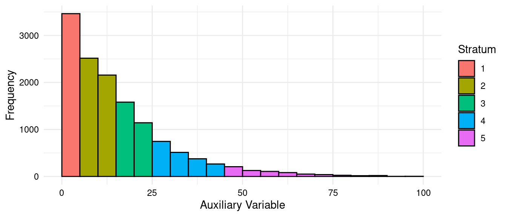
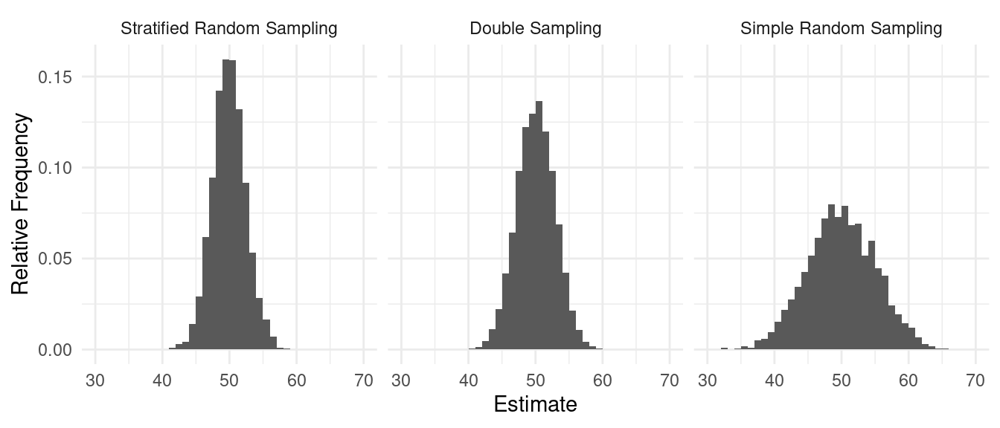

You can also download a PDF copy of this lecture.
If we can assign elements to strata, how should this be done so as to minimize the variance of \(\hat\mu\) or \(\hat\tau\)? Recall that the variance of \(\hat\mu\) under stratified random sampling is \[ V(\hat\mu) = \frac{1}{N^2}\sum_{j=1}^L N_j^2\left(1-\frac{n_j}{N_j}\right)\frac{\sigma_j^2}{n_j}. \] Note: Since \(V(\hat\tau) = N^2V(\hat\mu)\), any strategy that reduces \(V(\hat\mu)\) will also reduce \(V(\hat\tau)\).
Question: For a stratified sampling design, how should we stratify elements so as to make \(V(\hat\mu)\) or \(V(\hat\tau)\) small?
Various algorithms exist for stratification based on one or more auxiliary variables. Here an auxiliary variable is a variable with the properties that (a) we know the value of the auxiliary variable(s) for all elements in the population and (b) the auxiliary variable(s) is/are associated (correlated) with the target variable.

Comment: In principle, stratification improves with more strata (i.e., larger \(L\)), but there are diminishing returns.
Two requirements for stratified random sampling and inference that may not be met.
The capability of sampling separately from each stratum (via simple random sampling).
Knowledge of the stratum sizes — i.e., \(N_1, N_2, \dots, N_L\) for use in computing the estimators \[ \hat\mu = \frac{N_1}{N}\bar{y}_1 + \frac{N_2}{N}\bar{y}_2 + \cdots + \frac{N_L}{N}\bar{y}_L = \sum_{i=j}^L \frac{N_j}{N}\bar{y}_j, \] and \[ \hat\tau = N_1\bar{y}_1 + N_2\bar{y}_2 + \cdots + N_L\bar{y}_L = \sum_{j=1}^LN_j\bar{y}_j, \] respectively.
What if these requirements are not met? Options?
Use simple random sampling.
Use double sampling if \(N_1, N_2, \dots, N_L\) are unknown.
Use post-stratification if \(N_1, N_2, \dots, N_L\) are known but SRS was used.
Double sampling (aka “two-phase” sampling) is a general sampling technique for obtaining observations of an auxiliary variable that are needed for a design and/or needed to compute an estimator.1 Here this auxiliary variable is whatever we use to stratify the elements in the population.
Obtain a larger sample of size \(n'\) using simple random sampling. Determine the stratum membership of each element. Compute the number of elements in each stratum (\(n_1', n_2', \dots, n_L'\)).
Apply stratified random sampling to the sample obtained in the first phase by applying simple random sampling to each of the sub-samples of sampled elements.
We can estimate \(N_j/N\) with \(n_j'/n'\). The estimator of \(\mu\) then becomes \[ \hat\mu = \frac{n_1'}{n'}\bar{y}_1 + \frac{n_2'}{n'}\bar{y}_2 + \cdots + \frac{n_L'}{n'}\bar{y}_L = \sum_{j=1}^L \frac{n_j'}{n'}\bar{y}_j, \] To estimate \(\tau\) we can use \[ \hat\tau = N\frac{n_1'}{n'}\bar{y}_1 + N\frac{n_2'}{n'}\bar{y}_2 + \cdots + N\frac{n_L'}{n'}\bar{y}_L = N\sum_{j=1}^L \frac{n_j'}{n'}\bar{y}_j. \] The variances of these estimators can be written as \[ V(\hat\mu) = \text{a big mess} \ \ \ \text{and} \ \ \ V(\hat\tau) = N^2 \times \text{a big mess}. \] Typically these variances are larger than what they would be had we been able to use stratified random sampling without double sampling, but smaller than if we had used just simple random sampling.
Comment: We can also seek to optimize the double sampling design by picking \(n'\) (the number of elements in the first sample) and \(n_1, n_2, \dots, n_L\) (the number of elements in the second sample that are members of each stratum and within the first sample) for a fixed cost.
Example: Suppose an survey is to be conducted at an organization of 1000 employees. We want to estimate the mean scores to questions where responses are likely related to the political affiliation of the employees. While ideally a stratified random sampling design would be applied using political affiliation, this information is unknown to the employer. Consider the following double sampling design. The sample obtained in the first phase via simple random sampling can be summarized as follows.| Politics | \(n_j'\) |
|---|---|
| Liberal | 50 |
| Moderate | 30 |
| Conservative | 20 |
| Politics | \(n_j\) | \(\bar{y}_j\) | \(s_j\) |
|---|---|---|---|
| Liberal | 20 | 5.50 | 0.9 |
| Moderate | 20 | 4.00 | 2.1 |
| Conservative | 10 | 2.25 | 1.1 |
What is the estimate of \(\mu\)?
Consider a simulation study with a population with three strata where stratification would be beneficial. How do simple random sampling, double sampling, and stratified random sampling compare with respect to the sampling distribution of the estimator of \(\mu\) = 50?

The term “two-phase” should not be confused with the terms “two-stage” or “multi-stage” sampling, which are used to describe some kinds of cluster sampling designs that we will discuss later.↩︎